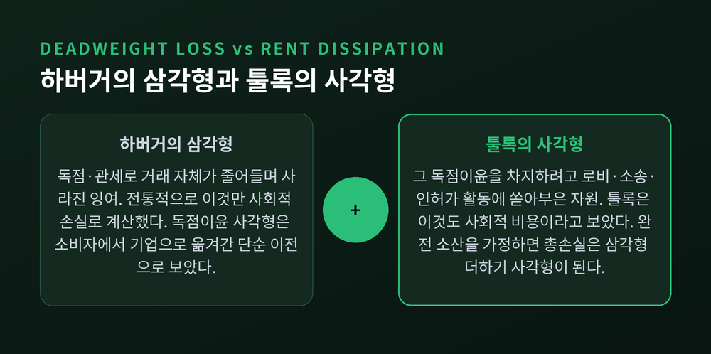
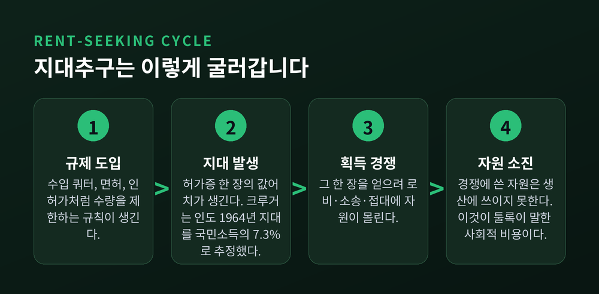
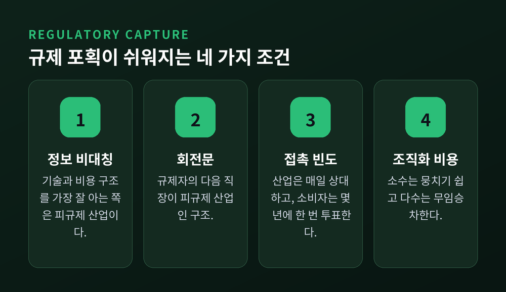
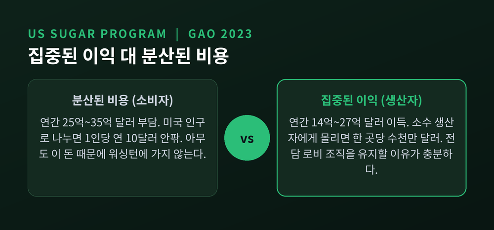
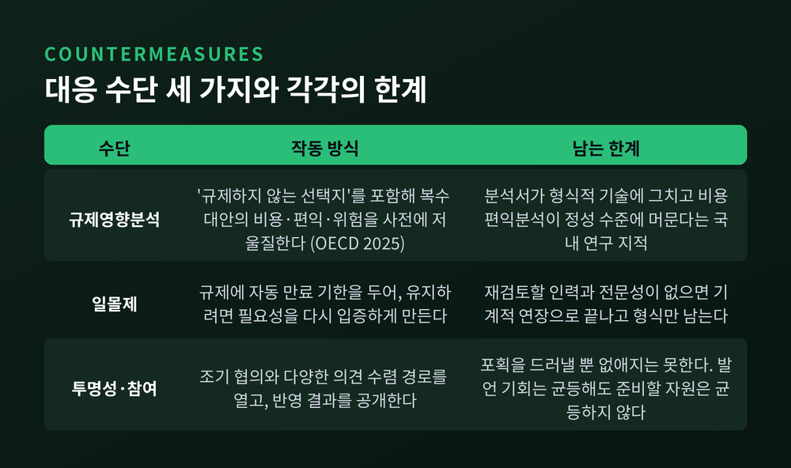

이번 글에서는 규제가 왜 종종 규제받는 쪽에 유리하게 굴러가는지를 정리해 보겠습니다. 경제학에는 이 현상을 설명하는 오래된 개념이 두 개 있습니다. 지대추구와 규제 포획입니다.
경제학에서 말하는 지대(rent)는 부동산 임대료가 아닙니다.
생산요소가 받는 보수 중에서 기회비용을 넘어서는 부분을 가리킵니다. 어떤 자원을 지금 쓰이는 곳에 붙잡아 두는 데 필요한 최소 금액을 이전수입(transfer earnings)이라 부르고, 그 최소액을 초과해 받는 몫이 지대입니다. 총보수는 이 둘의 합입니다.
리카도의 차액지대론에서 나온 개념입니다. 비옥한 땅은 척박한 땅보다 더 많이 벌지만, 그 초과분이 없다고 해서 땅이 농사를 그만두지는 않습니다. 그 남는 몫이 지대입니다.
여기서 오해가 하나 생기기 쉽습니다. 지대 자체는 나쁜 것이 아닙니다. 희소한 재능, 좋은 입지, 정당하게 획득한 특허에서도 지대는 자연스럽게 발생합니다.
문제는 지대를 만들어 내는 방식입니다.
둘의 겉모습은 비슷합니다. 기업은 어느 쪽이든 돈을 법니다. 그러나 사회 전체로 보면 결과가 전혀 다릅니다.
경제학은 오랫동안 독점의 피해를 사중손실(deadweight loss) 하나로 계산했습니다.
독점 기업이 가격을 올리면 거래가 줄어듭니다. 그 줄어든 거래에서 사라진 잉여가 사중손실이고, 그래프에서 삼각형 모양으로 나타납니다. 하버거의 삼각형이라 부릅니다. 반면 소비자에게서 기업으로 넘어간 독점이윤 사각형은 '누군가의 손해가 누군가의 이득'인 단순 이전이므로 사회적 손실이 아니라고 보았습니다.
1967년, 고든 툴록이 이 계산에 이의를 제기합니다.

그의 지적은 간단했습니다. 그 사각형은 하늘에서 떨어지지 않습니다. 누군가 그 자리를 차지하려고 자원을 쏟아부은 결과입니다. 로비, 소송, 인허가 획득 활동, 정치자금. 그 자원의 기회비용은 어디로 사라졌을까요.
논문 제목이 「관세, 독점, 그리고 절도의 후생비용」인 이유가 여기 있습니다. 절도의 사회적 비용은 훔쳐 간 돈이 아닙니다. 훔치려는 노력과, 막으려고 다는 자물쇠와 경비 비용입니다. 관세와 독점도 구조가 같다는 것이 툴록의 주장이었습니다.
지대가 완전히 소진된다고 가정하면, 총 후생손실은 삼각형 더하기 사각형이 됩니다. 종전 추정치보다 훨씬 큰 숫자입니다.
이 논문은 여러 학술지에서 거절당한 끝에 실렸습니다. 제대로 평가받기까지 20~30년이 걸렸다고 합니다.
다만 완전 소산은 이론적 극단입니다. 실제로 지대가 얼마나 소진되는지는 경쟁 구조에 따라 달라지며, 덜 소진되는 경우도 더 소진되는 경우도 있다는 후속 연구가 있습니다. 이 점은 짚어 두는 편이 정직하겠습니다.
'지대추구(rent-seeking)'라는 말은 툴록이 아니라 앤 크루거가 만들었습니다. 1974년 미국경제학회지에 실린 「지대추구 사회의 정치경제학」에서였습니다.
크루거는 인도의 수입 허가 제도를 들여다봤습니다. 1964년 기준으로 정부 규제가 만들어 낸 지대의 규모를 국민소득의 약 7.3%로 추정했습니다. 그중 수입 규제 하나만으로 약 5.1%였습니다.
여기서 나온 정책적 함의가 지금도 유효합니다.
같은 수준으로 수입을 억제하더라도 관세보다 수량 할당(쿼터·라이선스)의 후생비용이 더 큽니다. 관세로 걷은 돈은 국고로 들어갑니다. 그러나 쿼터가 만든 지대는 허가증을 따내려는 경쟁 과정에서 흩어져 사라집니다.
허가증 한 장의 값어치가 클수록, 그 한 장을 얻으려고 태우는 자원도 커집니다.

지금까지가 '지대추구'라면, 이제 '규제 포획' 쪽입니다.
1971년 이전까지 규제를 보는 표준 시각은 공익 이론이었습니다. 시장이 실패하니 정부가 나서서 교정한다는 관점입니다. 지금은 그 자리에 다른 그림이 함께 놓여 있습니다.
조지 스티글러가 1971년에 쓴 문장이 규제 연구의 방향을 바꿨습니다.
"규제는 대체로 산업이 획득하며, 그 산업의 이익을 위해 설계되고 운영된다."
스티글러는 규제를 정치 시장에서 거래되는 상품으로 보았습니다. 기업은 표와 조직과 자금으로 값을 치르고, 그 대가로 진입장벽을 삽니다. 그가 꼽은 품목은 보조금, 진입 제한, 대체재 억제, 가격 고정 네 가지였습니다.

포획이 작동하는 통로는 대략 네 갈래입니다.
첫째, 정보 비대칭입니다. 기술과 비용 구조를 가장 잘 아는 쪽은 규제 대상 산업입니다. 규제기관은 그 정보를 산업에서 얻을 수밖에 없습니다.
둘째, 인적 순환입니다. 흔히 회전문(revolving door)이라 부릅니다. 규제자의 다음 직장이 피규제 산업인 구조에서는 판단이 미묘하게 기웁니다.
셋째, 접촉 빈도입니다. 산업은 매일 규제기관을 상대합니다. 소비자는 몇 년에 한 번 투표할 뿐입니다.
넷째, 조직화 비용의 차이입니다. 이것이 가장 근본적인 이유이니 따로 보겠습니다.
맨커 올슨이 1965년에 낸 『집단행동의 논리』가 답을 줍니다.
핵심은 이렇습니다. 집단이 커질수록 무임승차 문제가 심해집니다. 그래서 소수의 집중된 이익집단이 다수의 분산된 이익집단을 정치적으로 압도합니다. 흔히 '집중된 이익 대 분산된 비용'이라 부르는 구도입니다.
미국의 설탕 프로그램이 교과서적 사례입니다.

미국 회계감사원(GAO)이 2023년 보고서에서 정리한 숫자를 보겠습니다. 설탕 프로그램이 소비자에게 지우는 부담은 연간 약 25억~35억 달러입니다. 경제 전체의 순손실은 연간 약 10억 달러로 추산됩니다. 생산자 측 이득은 연간 약 14억~27억 달러입니다. 2022년 기준으로 미국 소비자와 식품제조업체는 세계 가격의 약 두 배를 설탕에 지불했습니다.
이 정도면 폐지 여론이 들끓을 법합니다. 그런데 조용합니다.
이유는 나눗셈에 있습니다. 25억 달러를 미국 인구로 나누면 한 사람당 연간 10달러 안팎입니다. 이 돈을 아끼려고 워싱턴에 가서 의원을 만날 사람은 없습니다.
반대편은 사정이 다릅니다. 이득이 소수의 생산자에게 집중되면 한 곳당 수천만 달러 단위가 됩니다. 그 정도면 전담 로비 조직을 유지할 이유가 충분합니다.
규제가 규제받는 쪽에 유리해지는 이유는 음모가 아니라 산수입니다.
한쪽은 싸울 이유가 있고, 다른 쪽은 없습니다. 싸움은 대개 그렇게 끝납니다.
추상적인 이야기 같지만 생활에 붙어 있습니다.
직업 면허가 대표적입니다. 미국에서 면허가 필요한 직종에 종사하는 노동자 비중은 1950년대 약 5%였습니다. 지금은 20%를 넘고, 일부 추정으로는 25% 안팎입니다. 임금 효과도 확인됩니다. 면허 보유자는 비보유자보다 평균 4~6% 더 벌고, 마사지 치료사나 안경사 같은 일부 직종에서는 16~17%까지 올라갑니다.
케이토연구소는 면허가 소비자와 신규 진입 희망자에게는 비용이지만 기존 종사자에게는 측정 가능한 이득을 준다고 평가합니다. 비용이 편익을 넘어설 가능성이 높은데도 제도가 계속 유지된다는 점을 지적합니다.
다만 여기서 균형을 잃으면 안 됩니다. 의료나 항공처럼 정보 비대칭이 크고 실수의 대가가 치명적인 영역에서는 면허의 공익적 근거가 분명합니다. 진짜 쟁점은 "면허가 필요한가"가 아니라 "어디까지, 얼마나 강하게"입니다.
금융 규제 쪽 실증도 있습니다. IMF가 2019년에 낸 연구는 은행의 로비 활동과 모기지 대출 자료를 결합해 분석했습니다. 로비를 더 강하게 한 은행일수록 소득 대비 대출비율이 높은 모기지를 취급했고, 취급한 대출을 더 빠르게 유동화했습니다.
미국 상업·저축은행을 다룬 연구에서는 회전문 로비스트를 활용하는지 여부가 규제 집행 결과에 가장 큰 영향을 미쳤습니다.
로비의 수익률은 종종 놀라운 숫자로 나타납니다. 2004년 미국의 해외소득 송환 세금 감면이 자주 인용됩니다. 93개 기업이 이 사안에 최대 2억 8,270만 달러를 썼고, 세제 변경으로 총 625억 달러를 절감했습니다. 수익률로 환산하면 약 22,000%입니다.
그런데 여기서 이상한 일이 생깁니다. 수익률이 이 정도라면 왜 기업들은 로비에 훨씬 더 많은 돈을 쓰지 않을까요. 툴록 본인이 던진 질문이라 툴록의 역설이라 부릅니다. 법안을 통과시키는 것보다 막는 편이 훨씬 싸다는 설명, 연합 간 경쟁 때문에 값이 오르지 못한다는 설명, 신고된 지출이 실제 지출의 일부일 뿐이라는 설명이 나와 있습니다. 아직 정리되지 않은 논쟁입니다.
참고로 미 상원은 2004년 그 세금 감면이 미국 내 일자리 창출에는 실패했다고 결론지었습니다.
여기까지만 읽으면 규제는 늘 포획된다는 결론으로 기울기 쉽습니다. 그러나 학계의 결론은 그렇지 않습니다.
샘 펠츠먼(1976)은 스티글러를 수정했습니다. 규제자는 산업의 요구만 받는 것이 아닙니다. 소비자와 산업 양쪽의 압력을 동시에 받으며, 합리적 규제자는 전체 정치적 지지를 최적화하는 지점을 고릅니다. 순수한 포획이 아니라 지대의 배분 문제라는 것입니다.
게리 베커(1983)는 집단 간 경쟁을 강조했습니다. 사회적 손실이 커질수록 지대 추출에 저항할 유인도 함께 커집니다.
실증적 반증도 있습니다. 스티글러 이론의 잉크가 마르기도 전에 미국에서는 대규모 규제완화가 진행됐습니다. 1978년 항공규제완화법이 대표적입니다. 민간항공위원회의 진입·퇴출·가격 통제가 단계적으로 폐지됐고, 이후 20년간 항공요금이 약 3분의 1 하락했습니다.
물론 이 사례에도 이견이 있습니다. 당시 입법자들이 결국 주요 경쟁자가 네 곳으로 줄어드는 과점 상태를 예상하지 못했다는 비판입니다.
정리하면 이렇게 말할 수 있겠습니다. 포획은 보편 법칙이 아니라 조건부 경향입니다.
산업 집중도가 높고, 비용이 넓게 분산되어 있고, 사안이 기술적으로 복잡할수록 포획 확률이 올라갑니다. 반대로 사고나 스캔들로 사안이 대중에게 보이거나, 산업 내부에 이해가 갈리거나, 언론과 시민단체의 감시가 작동하면 포획은 약해집니다.

첫째, 규제영향분석(RIA)입니다.
OECD가 2025년 4월에 낸 규제정책 전망 보고서의 원칙은 명확합니다. 규제는 측정 가능한 목표에서 출발해야 하고, '규제하지 않는 선택지'를 포함한 복수의 대안을 평가해야 하며, 비용과 편익과 위험을 엄밀하고 비례적으로 저울질해야 합니다.
한계도 분명합니다. 국내 연구를 보면 규제개혁위원회에 제출되는 규제영향분석서 상당수가 간략한 기술에 그치고, 핵심인 비용편익분석도 형식적 수준에 머물러 있다는 지적이 나옵니다. 정량 분석보다 정성 분석 위주이고, 비용 부담 주체를 한두 개 이해관계자만 고려하는 경우가 많다는 진단입니다.
둘째, 일몰제(sunset clause)입니다.
규제에 자동 만료 기한을 두는 장치입니다. 유지하고 싶다면 필요성을 다시 입증하라고 요구하는 셈이니, 입증 책임을 규제 쪽으로 옮기는 효과가 있습니다. OECD 보고서는 아일랜드가 코로나19 관련 하위 규정 일부에 일몰 조항을 넣은 사례를 소개합니다. 급하게 만든 규칙일수록 재검토 조항이 필요하다는 취지입니다.
한계는 운영에 있습니다. 재검토를 수행할 인력과 전문성이 없으면 일몰은 기계적 연장으로 끝납니다. 그러면 형식만 남습니다.
셋째, 투명성과 이해관계자 참여입니다.
OECD는 조기 협의, 다양한 의견 수렴 경로, 그리고 받은 의견이 최종 결과에 어떻게 반영됐는지 보여주는 장치를 권고합니다. 그런데 같은 보고서가 인정하듯, 많은 회원국이 의견을 '접수했다'고 알리는 수준에 머물러 있습니다. 그 의견이 정책 설계를 실제로 어떻게 바꿨는지에 대한 피드백은 여전히 부족합니다.
더 근본적인 한계가 있습니다. 투명성은 포획을 드러낼 뿐, 자동으로 없애지 못합니다. 공개 협의 창구가 오히려 조직화된 집단에게 유리하게 작동할 수도 있습니다. 발언 기회는 균등해도, 발언을 준비할 자원은 균등하지 않기 때문입니다.
국내 규제비용관리제에 대한 평가도 비슷한 결을 보입니다. 취지에는 공감대가 있으나 담당 공무원의 전문성, 인적·물적 지원, 교육체계 등 운영체계 전반이 미흡하다는 진단이 나와 있습니다.
정리하면 이렇습니다.
지대추구는 새로운 부를 만들지 않고 기존의 부를 옮겨 오는 활동이고, 규제 포획은 그 활동이 규제기관을 통해 제도화된 상태입니다. 둘을 이어 주는 다리는 올슨이 말한 조직화 비용의 비대칭입니다.
이 이야기를 특정 정파의 무기로 쓰는 것은 적절하지 않습니다. 규제를 늘리는 쪽도, 줄이는 쪽도 같은 유혹 앞에 서 있습니다. 규제 완화라는 이름으로 만들어지는 특혜도 지대이기는 마찬가지입니다.
한 가지만 기억해 두시면 좋겠습니다. 어떤 규제를 볼 때 "누가 이득을 보고, 그 이득이 얼마나 좁은 곳에 모여 있는가"를 먼저 물어보시길 권합니다. 규제의 이름과 취지문만으로는 알 수 없는 것이 그 자리에 있습니다.
좋은 규제와 나쁜 규제를 가르는 선이 어디냐고 물으신다면, 저는 편익이 아니라 편익의 분포를 보라고 답하겠습니다.